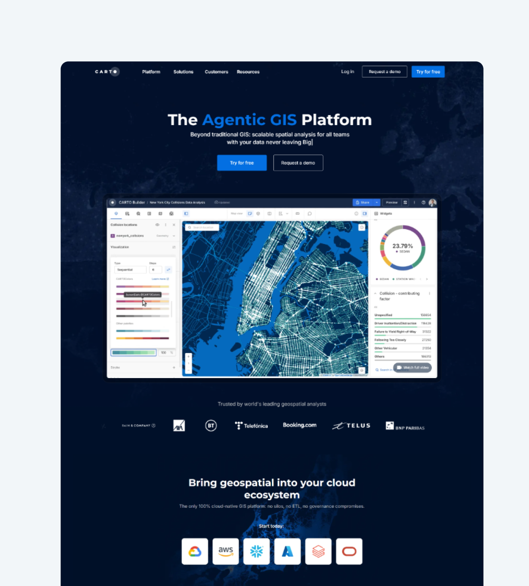
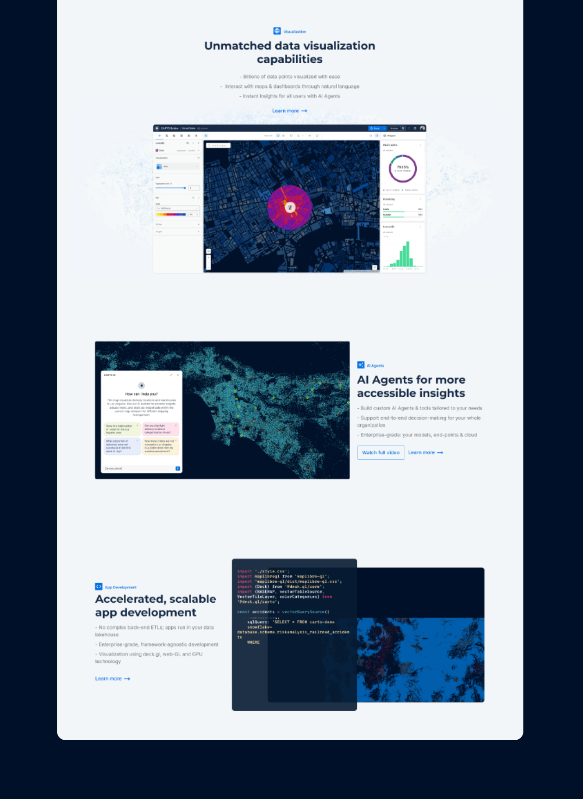
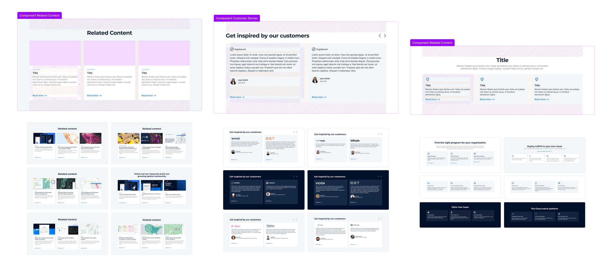
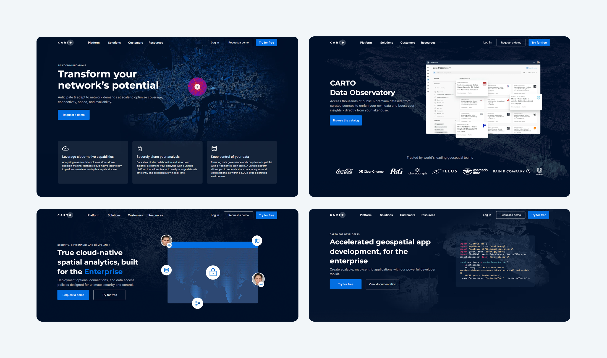
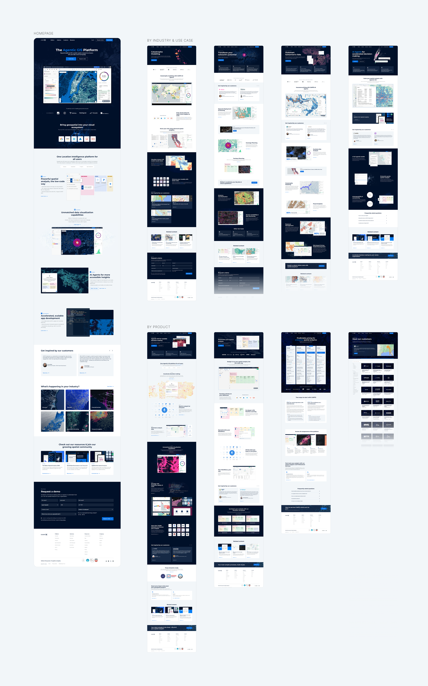
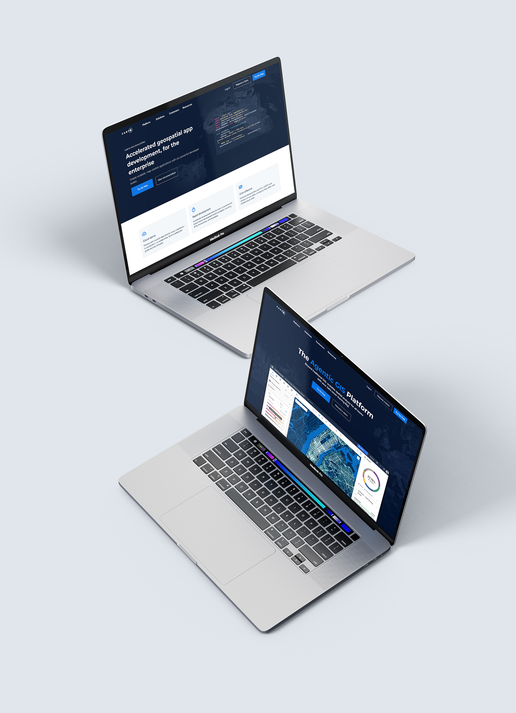
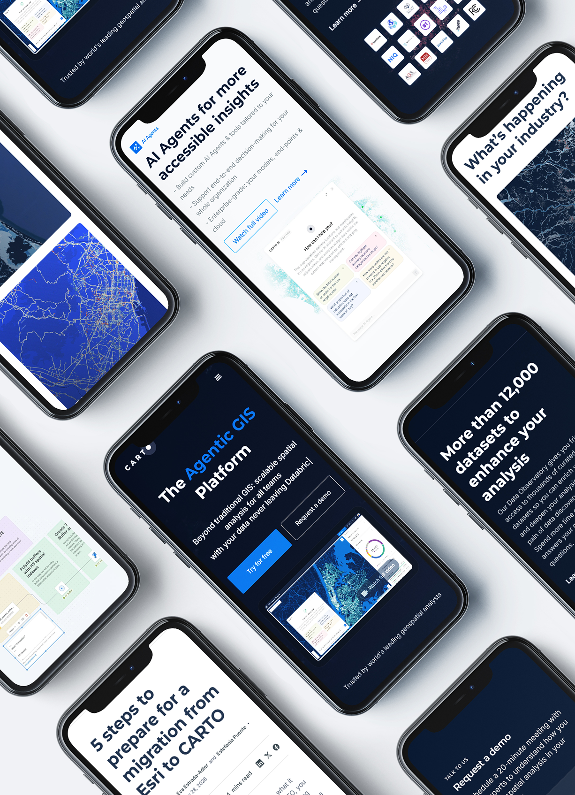

CARTO - Website redesign and migration
A modernized digital presence built around a clear principle: place the product at the center of the story.

Designing around the product
The process began by reframing the website around CARTO's product capabilities and the real spatial workflows they enable. Auditing the existing experience revealed where the product story was being diluted, while iterative layouts and prototypes helped establish a clearer hierarchy, more direct journeys and reusable patterns.
CARTO sits at the intersection of spatial analytics and the modern cloud data stack. The redesign translated that position into a confident, product led experience. Capabilities and outcomes lead the narrative, technical credibility remains visible, and supporting proof reinforces the story. The objective was to modernize the brand without making it generic, while creating a flexible foundation that could keep evolving with the platform.

A system built to evolve
The new direction was translated into reusable page patterns that brought consistency to product, solution, industry and campaign experiences. A shared visual language made each touchpoint feel distinct while still belonging to one coherent ecosystem.
That foundation also supported the website's evolution from Webflow to a GitHub based workflow. Design decisions could scale across teams and new content without losing the clarity, credibility and product focus established by the redesign.
Component library
A reliable system for faster publishing
A governed library of reusable components gave marketing teams and other content owners the autonomy to create landing pages without compromising usability or brand consistency. Clear variants, content rules and responsive behavior turned each component into a dependable building block.
For the design team, the same system accelerated delivery and made product launches, campaign updates and brand changes easier to roll out across the website. Instead of rebuilding patterns page by page, improvements could be designed once and adopted throughout the digital ecosystem.


A clearer product story
The redesign needed to communicate CARTO's leading position in spatial data science while creating a flexible system of reusable components. The result was a consistent global website that could evolve continuously alongside the company's marketing ecosystem.
A cleaner visual language, stronger hierarchy and reusable page patterns created consistency across the homepage, product pages, solutions, industries and campaigns.

Redesigning the platform
The work included two major redesign and migration initiatives. The website first moved to Webflow to support faster publishing and more flexible page creation, then evolved into a GitHub based workflow that brought marketing and engineering closer together while preserving a consistent user experience.

